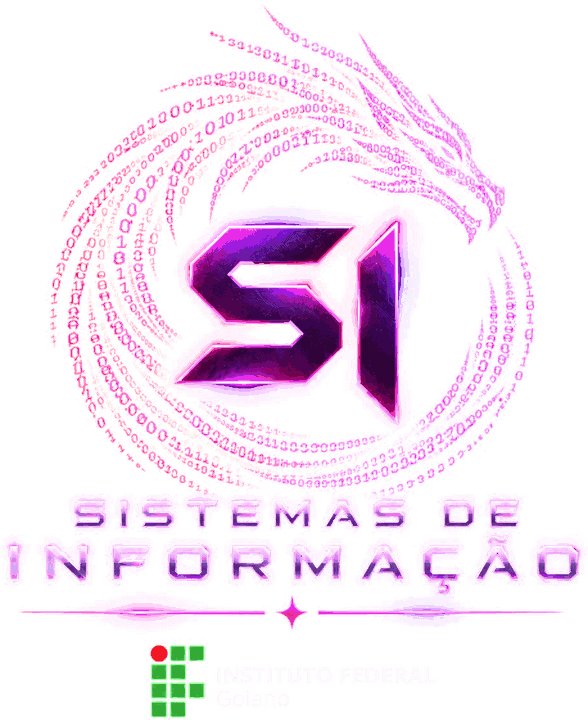
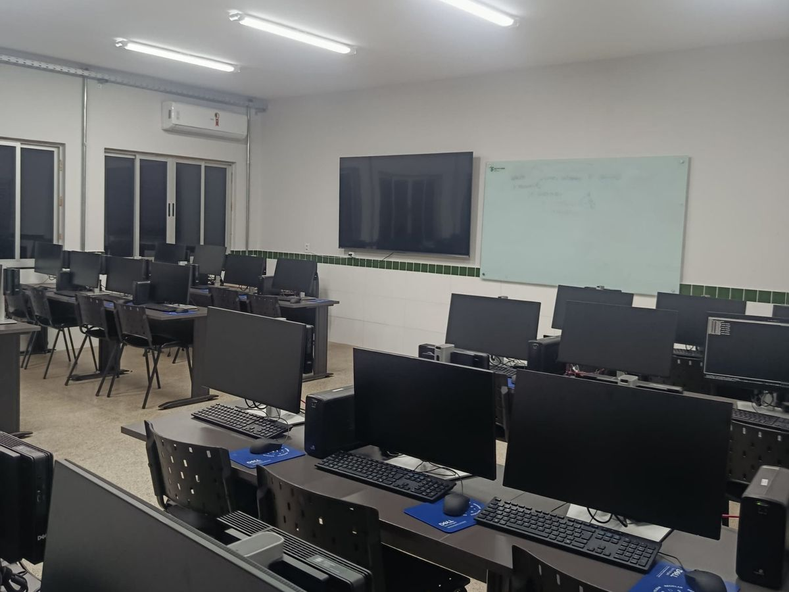
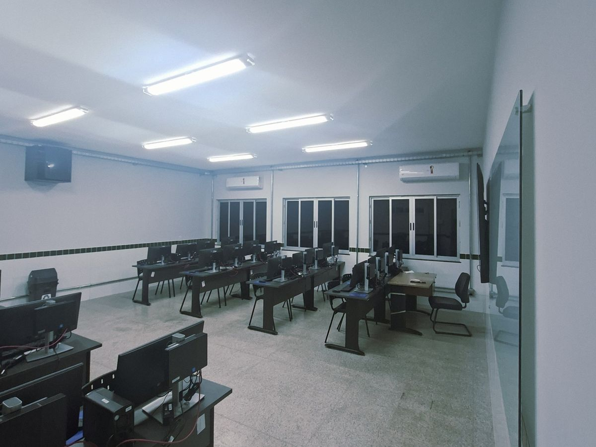
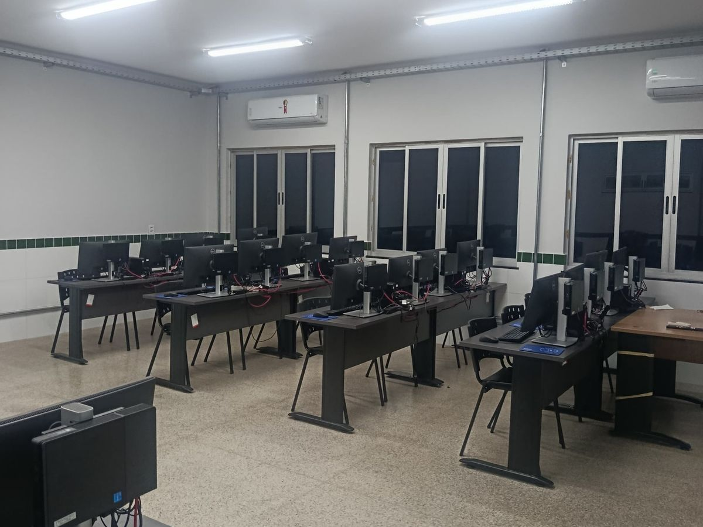
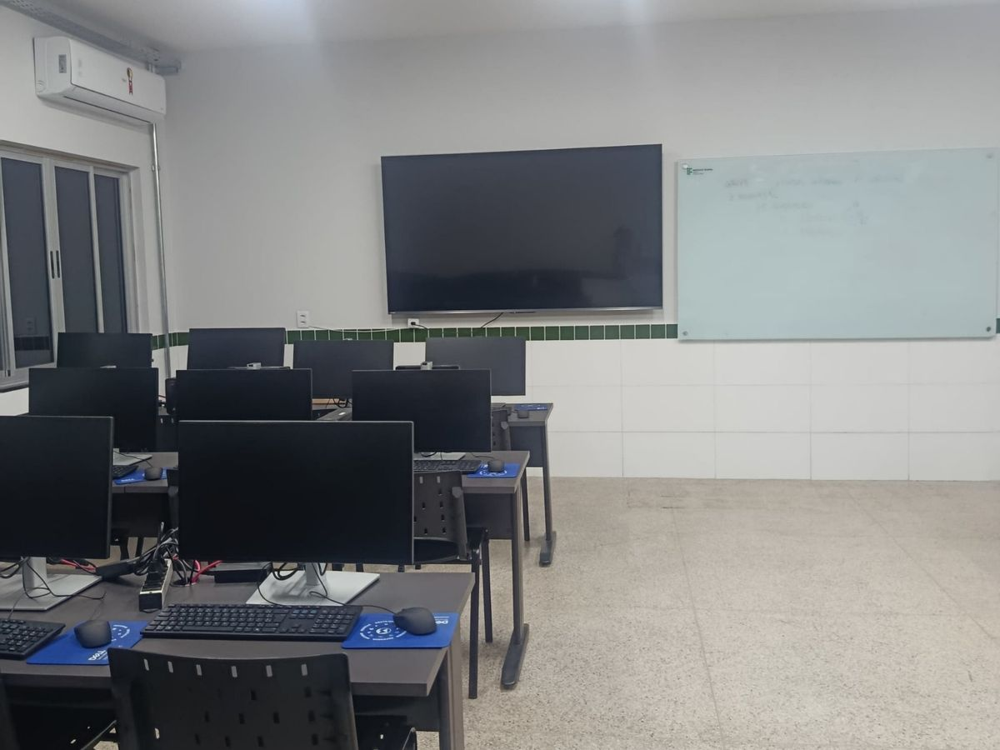
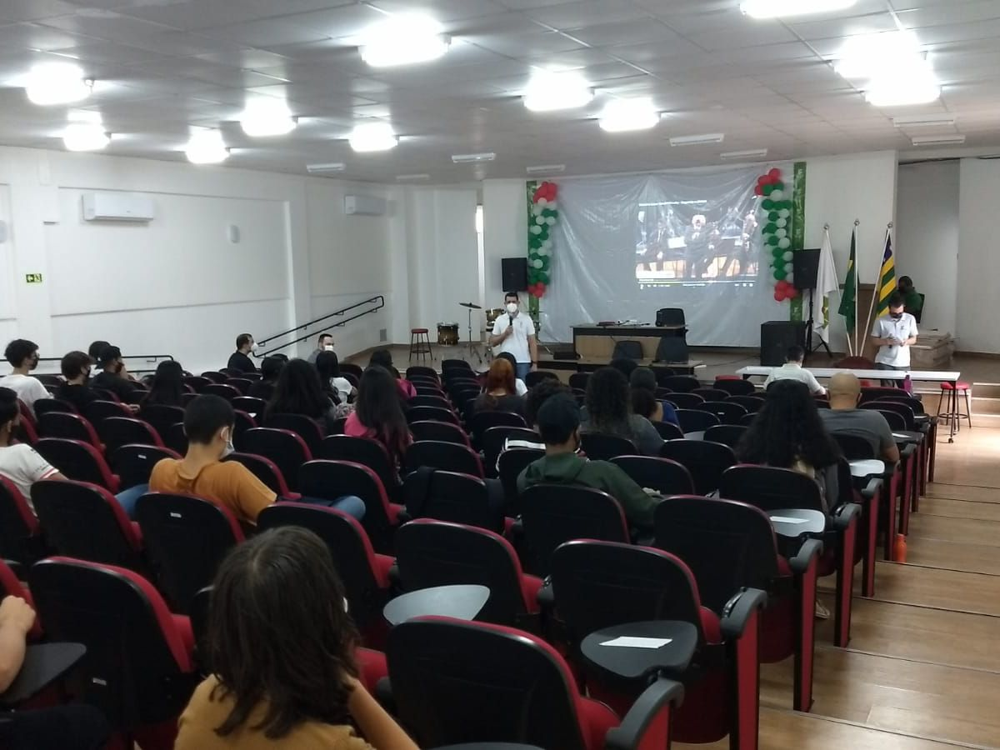
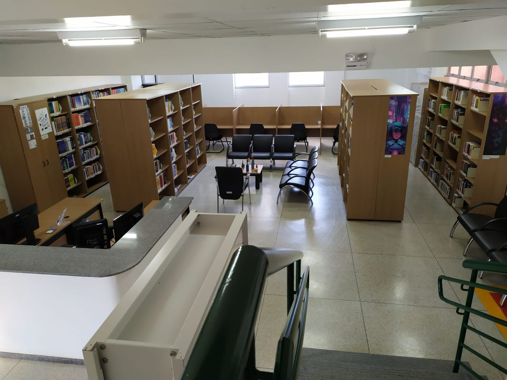

Programação
Desenvolvimento de aplicações, softwares, algoritmos e soluções computacionais.
IF Goiano — Campus Posse
Uma graduação que conecta tecnologia, gestão e inovação para desenvolver soluções capazes de transformar empresas, instituições e a sociedade.

Sistemas de Informação é a área dedicada ao estudo, planejamento, desenvolvimento e gerenciamento de sistemas que coletam, processam, armazenam e distribuem informações.
O curso aproxima a computação das necessidades reais das pessoas e organizações, preparando profissionais para analisar problemas e propor soluções tecnológicas.
Formar profissionais éticos e competentes, comprometidos com o desenvolvimento da sociedade e capazes de adquirir, aplicar, criar e desenvolver conhecimentos na área de Sistemas de Informação.
Uma formação com sólida base técnico-científica e visão humanística, preparada para planejar, desenvolver, implantar, gerenciar e manter sistemas de informação.
Sistemas de Informação une tecnologia e gestão para melhorar processos, organizar informações e solucionar problemas por meio de recursos computacionais.
Dados principais da oferta do Bacharelado em Sistemas de Informação.
Fonte: Projeto Pedagógico do Curso (PPC). Dados acadêmicos podem ser atualizados — consulte os canais oficiais do IF Goiano para informações vigentes.
Ao longo da graduação, você terá contato com diferentes áreas da tecnologia e com as competências que conectam computação, gestão e inovação.
Desenvolvimento de aplicações, softwares, algoritmos e soluções computacionais.
Organização, armazenamento, gerenciamento e consulta de informações.
Planejamento, desenvolvimento, testes e manutenção de sistemas.
Comunicação, conectividade e infraestrutura tecnológica.
Proteção de dados, sistemas e informações.
Criação de sites, sistemas e aplicações para a internet.
Estudo e desenvolvimento de tecnologias inteligentes.
Planejamento e gerenciamento de projetos tecnológicos.
Disciplinas organizadas por período, com carga horária e pré-requisitos, conforme o Projeto Pedagógico do Curso.
6 disciplinas300 horas+ Curricularização da Extensão I — 35 h
5 disciplinas270 horas+ Curricularização da Extensão II — 65 h
6 disciplinas300 horas+ Curricularização da Extensão III — 35 h
5 disciplinas300 horas+ Curricularização da Extensão IV — 65 h
5 disciplinas300 horas+ Curricularização da Extensão V — 35 h
6 disciplinas300 horas+ Curricularização da Extensão VI — 65 h
6 disciplinas300 horas
4 disciplinas210 horas
Ofertadas no 6º e 8º períodosDefinição pelo NDE
Carga horária total: 3.000 horas — 2.280 h de disciplinas, 200 h de Trabalho de Curso, 220 h de Atividades Complementares e 300 h de Curricularização da Extensão. Fonte: PPC (2025).
A tecnologia está presente em praticamente todos os setores da sociedade. Empresas, instituições de ensino, hospitais, bancos e órgãos públicos dependem cada vez mais de sistemas informatizados.
As possibilidades de atuação variam conforme a região, o mercado de trabalho e a formação complementar de cada profissional. Este site não representa promessa de emprego ou de renda.
Posse e o Nordeste Goiano têm economia marcada pela agropecuária, pelo comércio e pelos serviços. Sistemas de Informação apoia o desenvolvimento regional com soluções para desafios reais do território.
A graduação proporciona experiências que vão além da sala de aula: projetos de programação, sites, aplicativos, sistemas, pesquisas, extensões e produções acadêmicas desenvolvidos por estudantes e docentes.
Esta área será atualizada com projetos acadêmicos, pesquisas, ações de extensão e produções dos estudantes do curso. Volte em breve para conhecer as iniciativas de Sistemas de Informação do Campus Posse.
Respostas curtas e diretas para as dúvidas mais comuns de quem está conhecendo a área.
T.I. é sobre resolver problemas reais com tecnologia.
Para ingressar no curso de Bacharelado em Sistemas de Informação, é necessário ter concluído o Ensino Médio e ser aprovado conforme uma das modalidades de seleção disponíveis.
Ingresso por meio do processo seletivo institucional do Instituto Federal Goiano.
Ingresso pelo Sistema de Seleção Unificada (SiSU), utilizando a nota do Exame Nacional do Ensino Médio (ENEM).
Mudança de curso ou de campus dentro do Instituto, conforme regras do edital e disponibilidade de vagas.
Ingresso vindo de outra instituição de ensino superior, conforme edital e disponibilidade de vagas.
Retorno ao curso para quem interrompeu o vínculo, seguindo as regras do edital vigente.
Destinado a portadores de diploma ou a estudantes com estudos a aproveitar, conforme o edital.
As modalidades de transferência, reingresso e aproveitamento dependem de edital e da disponibilidade de vagas. Consulte sempre as regras vigentes nos canais oficiais do IF Goiano antes de qualquer inscrição.
Localizado na Rodovia GO-453, km 2,5, em Posse — GO, o Campus Posse oferece laboratórios de informática e laboratório de redes utilizados em aulas práticas, além de biblioteca, auditório e espaços acadêmicos para atividades de ensino, pesquisa e extensão.






Materiais oficiais de divulgação para ler na tela ou baixar em PDF.
Documento oficial do curso: perfil e objetivos da formação, matriz curricular por período, carga horária, laboratórios e regras acadêmicas do Bacharelado em Sistemas de Informação.
PDF em breve
@bsi.federal
Perfil oficial do Bacharelado em Sistemas de Informação do IF Goiano — Campus Posse. Acompanhe para receber novidades sobre o curso e a vida acadêmica.
Acompanhe no InstagramFale com a coordenação do curso ou acesse os canais oficiais do Instituto Federal Goiano.
Coordenador do Bacharelado em Sistemas de Informação
reidner.cavalcante@ifgoiano.edu.brCanal institucional do Bacharelado em Sistemas de Informação
si.pos@ifgoiano.edu.brRod. GO-453, km 2,5, Fazenda Vereda do Canto, Distrito Agroindustrial — Posse, Goiás